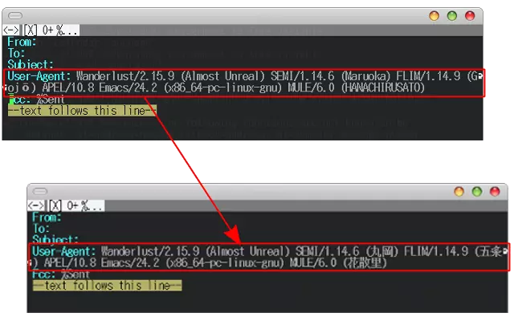

Rail - Replace Agent-String Internal Library
What is Rail?
RAIL – Replace Agent-string Internal Library レイルは, 以下の機能を提供しています:
- tm に含まれる genjis.el 互換機能 (変数 mule-version の日本語化)
- FLIM / SEMI のコードネームを 日本語化し, メッセージの User-Agent: フィールドに適用
本バージョンより, Meadow と irchat-pj の support を廃止しました.

install
そのうち melpa に申請するかもしれません. el-get をお使いの方は rail.rcp をお使い下さい.
% tar xvzf rail-(version).tar.gz % cd rail-(version) % make % sudo make install
MULE のコードネームが増えることはさほどないとは思いますが, FLIM や SEMI は, 随時コードネームが増加しております. より新しいコードネームを正しく変換するためには,
- [FLIM] FLIM(およびその派生形)のソースにある VERSION をcontrib/FLIMVERSION にコピー
- [SEMI] SEMI(およびその派生形)のソースにある VERSION をcontrib/SEMIVERSION にコピー
したうえで,
% make distclean % make
してください.
使用方法
~/.emacs のどこかに
(require 'rail)
と記述しておくだけです. 今まで ISO-8859-4 を使った User-Agent:
フィールドが, 日本語表記に変更されます.
また, rail.el は tm に含まれる genjis.el の互換機能も提供します.
~/.emacs の (require 'rail) の記述の手前に
(setq rail-emulate-genjis t)
と書いておくことで, 変数 mule-version が日本語化されます.
なお, rail-emulate-genjis が nil であっても
User-Agent: に含まれる Mule の codename は日本語表記になります.
User-Agent: はそのままで, genjis 機能だけ利用したい場合は,
(setq rail-emulate-genjis t
rail-user-agent-convert-statically nil
rail-user-agent-convert-dynamically nil)とします. コンパイル後に FLIM / SEMI のバージョンを増やしたい, コードネームを別の表記にしたい場合等は,
- rail-additional-flim-codename-alist (FLIM)
- rail-additional-semi-codename-alist (SEMI)
を設定してください. 設定方法は, それぞれの additional がつかない変数と同
じですので, これらが定義されている rail-table-*.el を参照ください. な
お, こちらで記述したものが優先されますので, デフォルトが気にいらない場合
等, これらの変数を設定してください.
意見・要望等
github issues へお願いいたします.
License
このプログラムは free software です. GNU General Public License のもとに, このプログラムを再配布したり改変したりしてもかまいません.
This file is free software; you can redistribute it and/or modify it under the terms of the GNU General Public License as published by the Free Software Foundation; either version 2, or (at your option) any later version. This file is distributed in the hope that it will be useful, but WITHOUT ANY WARRANTY; without even the implied warranty of MERCHANTABILITY or FITNESS FOR A PARTICULAR PURPOSE. See the GNU General Public License for more details. You should have received a copy of the GNU General Public License along with GNU Emacs; see the file COPYING. If not, write to the Free Software Foundation, Inc., 51 Franklin Street, Fifth Floor, Boston, MA 02110-1301 USA.
HISTORY
本プログラムは 2002 年までしまだみつひろさんによって開発/管理されていま した. 過去の開発履歴はold/CHANGELOGにあります. しまださんが開発から手を 引かれたので, 2010 年から佐々木がひきとって細々と公開しています. 有用な プログラムを作成して下さったしまださんへの感謝をここに記しておきます.
本プログラム群は気がついたタイミングで適宜アップデートしていきます. ご意見や要望などありましたら, 遠慮なくご連絡下さい.